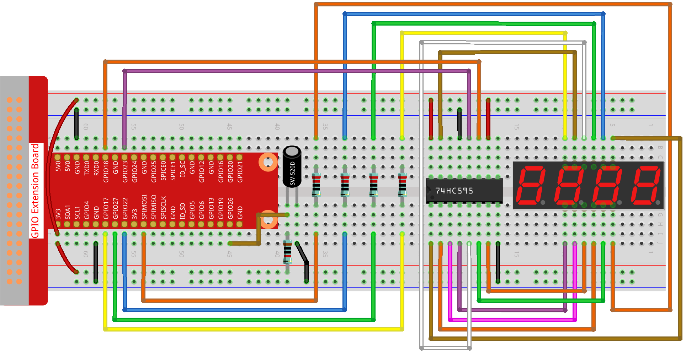

Note
Bonjour, bienvenue dans la communauté des passionnés de SunFounder Raspberry Pi, Arduino et ESP32 sur Facebook ! Plongez plus profondément dans l’univers du Raspberry Pi, de l’Arduino et de l’ESP32 avec d’autres passionnés.
Pourquoi nous rejoindre ?
Support d’experts : Résolvez les problèmes après-vente et les défis techniques grâce à l’aide de notre communauté et de notre équipe.
Apprendre et partager : Échangez des astuces et des tutoriels pour améliorer vos compétences.
Avant-premières exclusives : Bénéficiez d’un accès anticipé aux annonces de nouveaux produits et aux aperçus exclusifs.
Remises spéciales : Profitez de réductions exclusives sur nos derniers produits.
Promotions festives et cadeaux : Participez à des tirages au sort et à des promotions spéciales pendant les fêtes.
üëâ Pr√™t √† explorer et √† cr√©er avec nous ? Cliquez sur [Ici] et rejoignez-nous d√®s aujourd‚Äôhui !
3.1.13 JEU – 10 Secondes
Introduction
Dans ce projet, nous allons créer un dispositif de jeu pour tester votre concentration. Attachez l’interrupteur à bascule à un bâton pour en faire une baguette magique. Secouez la baguette, l’affichage à 4 chiffres commencera à compter. Secouez-la à nouveau pour arrêter le compteur. Si vous parvenez à maintenir le compteur sur 10,00 secondes, vous avez gagné. Vous pouvez jouer à ce jeu avec vos amis pour voir qui est le maître du temps.
Composants nécessaires
Dans ce projet, nous aurons besoin des composants suivants.

Schéma de câblage
T-Board Name |
physical |
wiringPi |
BCM |
GPIO17 |
Pin 11 |
0 |
17 |
GPIO27 |
Pin 13 |
2 |
27 |
GPIO22 |
Pin 15 |
3 |
22 |
SPIMOSI |
Pin 19 |
12 |
10 |
GPIO18 |
Pin 12 |
1 |
18 |
GPIO23 |
Pin 16 |
4 |
23 |
GPIO24 |
Pin 18 |
5 |
24 |
GPIO26 |
Pin 37 |
25 |
26 |

Procédures expérimentales
Étape 1 : Construisez le circuit.
Étape 2 : Accédez au dossier du code.
cd ~/davinci-kit-for-raspberry-pi/python-pi5
Étape 3 : Exécutez le fichier exécutable.
sudo python3 3.1.13_GAME_10Second.py
Secouez la baguette, l’affichage à 4 chiffres commencera à compter, secouez-la à nouveau pour arrêter le compteur. Si vous parvenez à maintenir l’affichage sur 10,00 secondes, vous avez gagné. Secouez-la encore une fois pour commencer un nouveau tour de jeu.
Avertissement
Si un message d’erreur s’affiche RuntimeError: Cannot determine SOC peripheral base address, veuillez vous référer à Si gpiozero ne fonctionne pas..
Code
Note
Vous pouvez Modifier/Réinitialiser/Copier/Exécuter/Arrêter le code ci-dessous. Mais avant cela, vous devez vous rendre à l’emplacement du code source tel que davinci-kit-for-raspberry-pi/python-pi5. Après modification du code, vous pouvez l’exécuter directement pour voir l’effet.
#!/usr/bin/env python3
from gpiozero import OutputDevice, Button
import time
import threading
# Initialisation du bouton connecté au GPIO 26
sensorPin = Button(26)
# Définir les broches GPIO connectées au registre à décalage 74HC595
SDI = OutputDevice(24) # Entrée de données série
RCLK = OutputDevice(23) # Horloge de registre
SRCLK = OutputDevice(18) # Horloge du registre à décalage
# Définir les broches GPIO pour la sélection de chiffre sur l'afficheur à 7 segments
placePin = [OutputDevice(pin) pour pin in (10, 22, 27, 17)]
# Définir les codes de segments pour les chiffres de 0 à 9 sur l'afficheur à 7 segments
number = (0xc0, 0xf9, 0xa4, 0xb0, 0x99, 0x92, 0x82, 0xf8, 0x80, 0x90)
# Variables du compteur et du minuteur
counter = 0
timer1 = None
gameState = 0
def clearDisplay():
""" Clear all segments on the 7-segment display. """
for _ in range(8):
SDI.on()
SRCLK.on()
SRCLK.off()
RCLK.on()
RCLK.off()
def hc595_shift(data):
""" Shift data to the 74HC595 shift register to display a digit. """
for i in range(8):
SDI.value = 0x80 & (data << i)
SRCLK.on()
SRCLK.off()
RCLK.on()
RCLK.off()
def pickDigit(digit):
""" Select which digit to display on the 7-segment display. """
for pin in placePin:
pin.off()
placePin[digit].on()
def display():
""" Display the current counter value on the 7-segment display. """
global counter
clearDisplay()
pickDigit(0)
hc595_shift(number[counter % 10])
clearDisplay()
pickDigit(1)
hc595_shift(number[counter % 100 // 10])
clearDisplay()
pickDigit(2)
hc595_shift(number[counter % 1000 // 100] - 0x80)
clearDisplay()
pickDigit(3)
hc595_shift(number[counter % 10000 // 1000])
def stateChange():
""" Handle state changes for the counter based on button presses. """
global gameState, counter, timer1
if gameState == 0:
counter = 0
time.sleep(1)
timer()
elif gameState == 1 and timer1 is not None:
timer1.cancel()
time.sleep(1)
gameState = (gameState + 1) % 2
def loop():
""" Main loop to check for button presses and update the display. """
global counter
currentState = 0
lastState = 0
while True:
display()
currentState = sensorPin.value
if (currentState == 0) and (lastState == 1):
stateChange()
lastState = currentState
def timer():
""" Timer function that increments the counter every 0.01 second. """
global counter, timer1
timer1 = threading.Timer(0.01, timer)
timer1.start()
counter += 1
try:
loop()
except KeyboardInterrupt:
if timer1:
timer1.cancel()
Explication du Code
Le script commence par importer les modules nécessaires. La bibliothèque
gpiozeroest utilisée pour interfacer avec des périphériques GPIO tels que les boutons, et les modulestimeetthreadingsont utilisés pour gérer les tâches liées au temps ou les opérations concurrentes.#!/usr/bin/env python3 from gpiozero import OutputDevice, Button import time import threading
Initialisation d’un objet
Buttonde la bibliothèque GPIO Zero, connecté à la broche GPIO 26. Cette configuration permet de détecter les appuis sur le bouton.# Initialiser le bouton connecté à la broche GPIO 26 sensorPin = Button(26)
Configuration des broches GPIO connectées aux entrées de données série (SDI), horloge de registre (RCLK) et horloge de registre à décalage (SRCLK) du registre à décalage 74HC595.
# Définir les broches GPIO connectées au registre à décalage 74HC595 SDI = OutputDevice(24) # Entrée de données série RCLK = OutputDevice(23) # Horloge de registre SRCLK = OutputDevice(18) # Horloge du registre à décalage
Configuration des broches pour chaque chiffre de l’afficheur à 7 segments et définition des codes binaires pour afficher les chiffres de 0 à 9.
# Définir les broches GPIO pour la sélection des chiffres sur l'afficheur à 7 segments placePin = [OutputDevice(pin) pour pin in (10, 22, 27, 17)] # Définir les codes de segments pour les chiffres de 0 à 9 sur l'afficheur à 7 segments number = (0xc0, 0xf9, 0xa4, 0xb0, 0x99, 0x92, 0x82, 0xf8, 0x80, 0x90)
Fonctions pour contrôler l’afficheur à 7 segments.
clearDisplayéteint tous les segments,hc595_shiftenvoie les données au registre à décalage, etpickDigitactive un chiffre spécifique de l’afficheur.def clearDisplay(): """ Clear all segments on the 7-segment display. """ for _ in range(8): SDI.on() SRCLK.on() SRCLK.off() RCLK.on() RCLK.off() def hc595_shift(data): """ Shift data to the 74HC595 shift register to display a digit. """ for i in range(8): SDI.value = 0x80 & (data << i) SRCLK.on() SRCLK.off() RCLK.on() RCLK.off() def pickDigit(digit): """ Select which digit to display on the 7-segment display. """ for pin in placePin: pin.off() placePin[digit].on()
Fonction pour afficher la valeur actuelle du compteur sur l’afficheur à 7 segments.
def display(): """ Display the current counter value on the 7-segment display. """ global counter clearDisplay() pickDigit(0) hc595_shift(number[counter % 10]) clearDisplay() pickDigit(1) hc595_shift(number[counter % 100 // 10]) clearDisplay() pickDigit(2) hc595_shift(number[counter % 1000 // 100] - 0x80) clearDisplay() pickDigit(3) hc595_shift(number[counter % 10000 // 1000])
Fonction pour gérer les changements d’état (démarrage/arrêt) du compteur en fonction des pressions sur le bouton.
def stateChange(): """ Handle state changes for the counter based on button presses. """ global gameState, counter, timer1 if gameState == 0: counter = 0 time.sleep(1) timer() elif gameState == 1 et timer1 est activé: timer1.cancel() time.sleep(1) gameState = (gameState + 1) % 2
Boucle principale qui vérifie continuellement l’état du bouton et met à jour l’affichage. Elle appelle
stateChangelorsque l’état du bouton change.def loop(): """ Main loop to check for button presses and update the display. """ global counter currentState = 0 lastState = 0 while True: display() currentState = sensorPin.value if (currentState == 0) and (lastState == 1): stateChange() lastState = currentState
Fonction de minuterie qui incrémente le compteur à intervalles réguliers (toutes les 0,01 seconde).
def timer(): """ Timer function that increments the counter every 0.01 second. """ global counter, timer1 timer1 = threading.Timer(0.01, timer) timer1.start() counter += 1
Exécute la boucle principale et permet une sortie propre du programme en utilisant une interruption du clavier (Ctrl+C).
try: loop() except KeyboardInterrupt: if timer1: timer1.cancel()